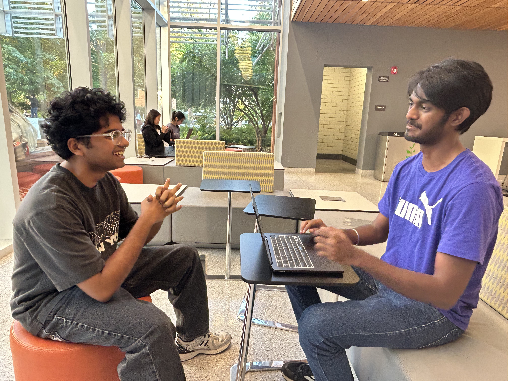
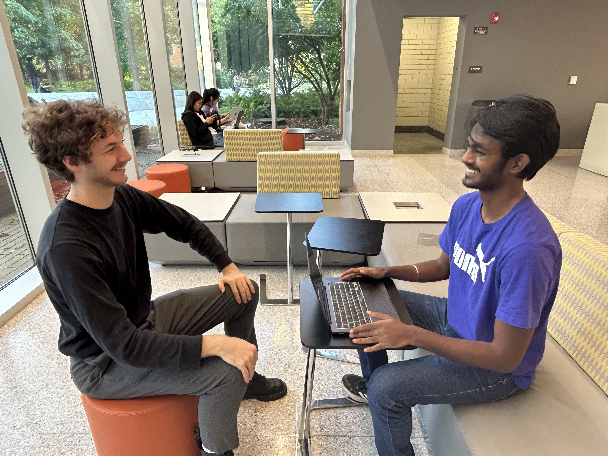
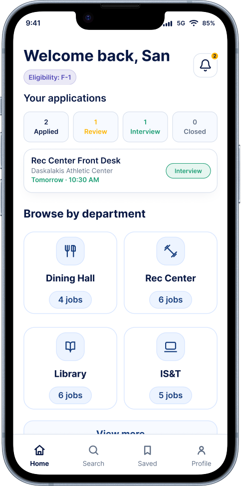
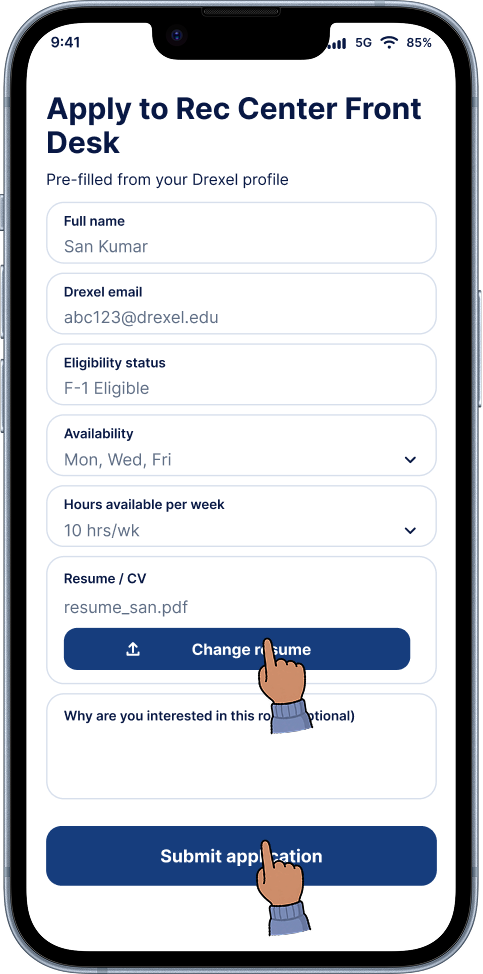
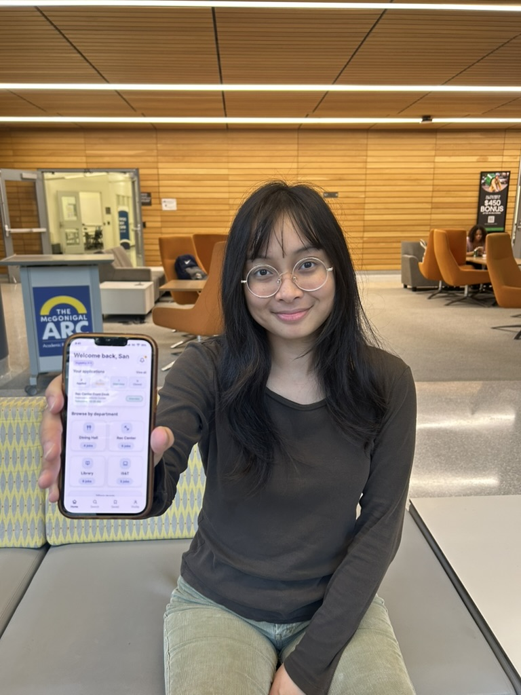

Scattered job search
68%
said it was hard to tell which jobs they were eligible for.
Drexel Works · UX/UI case study
A UX/UI case study on helping Drexel students find relevant part-time jobs without guessing eligibility.
Concept projectInternational students studying in the U.S. on an F-1 visa. They can generally work on campus for up to 20 hours a week during classes. Off-campus work needs separate authorization. Drexel guidance
Students who receive a work-study award through financial aid. It lets them earn money through eligible part-time jobs. Drexel work-study
Those jobs use funding reserved for students with a work-study award. Domestic students without an award and students with only F-1 status cannot use that funding. Federal aid eligibility
If the listing says “work-study preferred,” they may still be considered. If it says “work-study only,” they need an award. Check with the employer if unsure.
Problem
Listings often lacked clear eligibility information for F-1 students, domestic students, and students with work-study awards. Outdated openings made the search even more frustrating.
Approach
I first surveyed 84 Drexel students to understand whether others faced the same challenges. After discovering that many students shared this experience, I conducted in-depth interviews with 10 students, including five undergraduate and five graduate students, to better understand their needs, frustrations, and job-search experiences.
said it was hard to tell which jobs they were eligible for.
said it was hard to tell which jobs they were eligible for.
said it was hard to tell which jobs they were eligible for.
found listings with missing details or outdated information.


The survey results showed the pattern. These perspectives made the uncertainty behind the numbers easier to understand.
Representative student perspectives
“The job sounded interesting, but I could not tell if my visa status allowed me to apply.”
Mary
“I checked several places because I did not know where campus jobs were posted.”
Leo Das
“I found a listing, but wasn’t sure its details and deadline were still current.”
Joseph
Solution
Drexel Works brings campus jobs, eligibility details, and application updates together.

Students can track their applications and browse jobs across campus departments from the home screen.

Students can filter jobs and quickly check who can apply, the pay, and weekly hours.

Students can check the pay, hours, and requirements before deciding to apply.

Profile details are filled in, so students only need to review them, update their résumé, and apply.
Screen 1 of 4: Home
Impact after student testing
After testing the prototype with 30 students, I asked them about the experience. Their responses showed that Drexel Works made eligibility clearer, reduced unnecessary searching, and helped them move toward applying with greater confidence.
less time spent finding a job that matched the student’s eligibility.
fewer irrelevant or unavailable listings opened during the task.
more participants reached Apply Now without help.
understood the eligibility badges on their first pass.


Participant takeaways
“I could tell which roles matched my eligibility. The badges helped me understand why each role was a fit.”
Christine
“I spent less time opening jobs that did not match. I could focus on the opportunities that were relevant to me.”
Christopher
“I felt confident applying without asking for help. The next step was clear, so I could apply on my own.”
Haris
By centralizing campus part-time jobs in one place, we made it easier for students to find relevant roles, identify which jobs matched their visa eligibility, apply faster, and track live application updates without switching platforms.
Working on Drexel Works helped me see that finding a campus job is about more than discovering openings. Students also need clear information about who can apply, what the job requires, and what happens after applying. Bringing these steps together became the focus of my design.
Explore my brainstorming, early ideas, and the decisions behind Drexel Works.
View my process and ideation